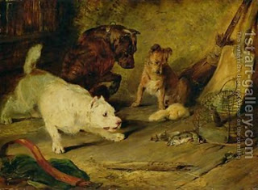

Zevachim 17 - Others Who Cannot Perform Sacrificial Service
One who is ritually impure today (tevul yom), for example, because of a contact with a dead rat, has to go to a mikveh. Still, some vestiges of ritual impurity linger until nightfall . If he receives the blood of a sacrifice, he makes it invalid, because of a verse " They shall be holy... and they shall not profane ." This verse is extra, and we apply it to the one who is partially impure.
One who lacks atonement . Some special cases of impurity, such as spiritual leprosy (metzora) require purification in stages, the last stage being bringing the sacrifices. Until he has brought them, he invalidates the service.
Why did the Torah have to teach both cases, if they are so closely related anyway? - Because each possesses its own stringency, so that the disqualification of one cannot be derived from the other. The "impure today" cannot eat the Kohen's portion, but the one who lacks atonement can. On the other hand, the one who lacks atonement needs a positive action, that is, bringing his sacrifices, whereas the one who is "impure today" only needs nightfall, which comes by itself.
Art: Sir Edwin Henry Landseer - Ratcatchers